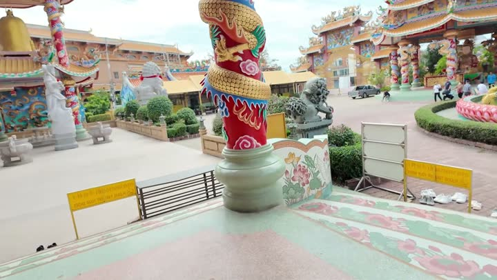

Атлас мест · Си-Рача, Таиланд
Смотровая Кхао Пхра Кхру

Наш отзыв
Мы побывали на смотровой площадке храма Кхао Пхра Кхру в Си Раче дважды. Первый раз был немного разочаровывающим: шла реконструкция, территория выглядела неопрятной, но виды открывались потрясающие. Во второй визит все оказалось иначе — храм преобразился, вокруг царил порядок, а атмосфера стала более приятной. Нас порадовало разнообразие животных, особенно запомнились крупные рыбы и дружелюбные обезьяны.
Цены на 2025 год — на момент съёмки
- лотус — 20 батт (2025)
- вход в зоопарк — 100 батт (2026)
Совет: Подписывайтесь на Telegram-канал авторов канала, чтобы узнать о будущих поездках и присоединиться к ним
Где это
13.157740599999997,100.925972
Смотреть в наших роликах
Контрастный день в Си Раче: от жути до восторга | ПАТТАЙЯ 2025
19 июля 2025 · место с 28:15 · все места ролика
ТЫ НИКОГДА НЕ ВИДЕЛ ТАКОГО ТАИЛАНДА – Храм Ада и Рая + Siri Zoo | город в 3D
17 января 2026 · место с 0:00 · все места ролика
Рядом из нашего атласа
- Китайский храм Бога Нача — 645 м
- Храм Санчаунаджа — 1,1 км
- Сирача — 1,1 км
- Торговый центр Пасифик Парк — 1,3 км
- Зоопарк Сири Парк — 9,5 км
- Открытый зоопарк Кхао Кхео — 15,2 км
Атлас мест канала «Юля и Дима / БЕЗ ТОРМОЗОВ». Описания составлены по нашим роликам; цены — на момент съёмки. Нашли неточность — напишите нам в Telegram.